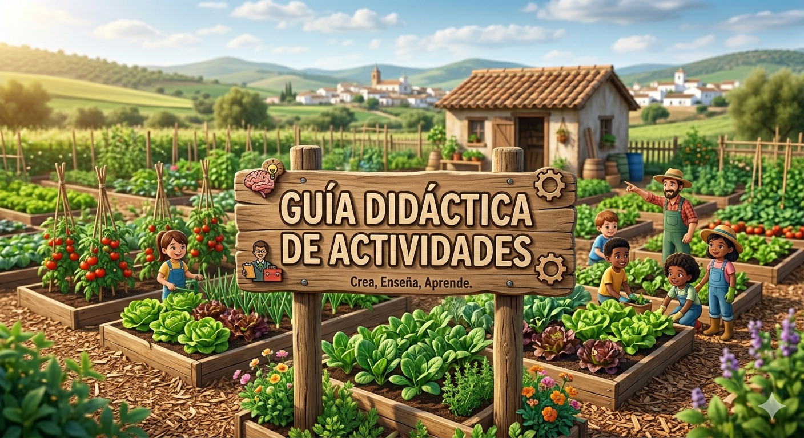

Tabla de vinculaciones

Imagen generada con Gemini Nano Banana.
Para trabajar las actividades de forma organizada, establecemos una relación entre lo que se va a evaluar y lo que el alumnado va a hacer. Esta conexión permite optimizar el proceso de enseñanza-aprendizaje garantizando que cada actividad contribuya de forma directa al desarrollo de las competencias y criterios establecidos en el curriculo.
La siguiente tabla muestra la relación en que cada actividad se vincula con los criterios de avaluación:
https://drive.google.com/file/d/1gr_CGWaniar-3CIbUAiXWAtZVCMlG7d1/view?usp=sharing